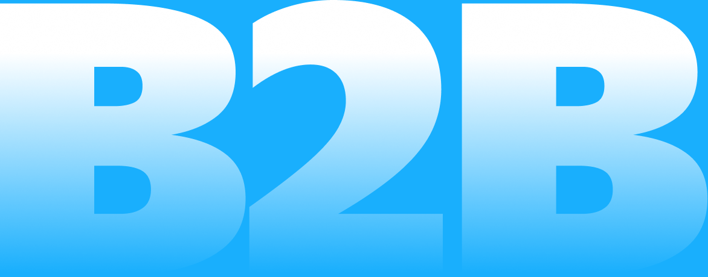
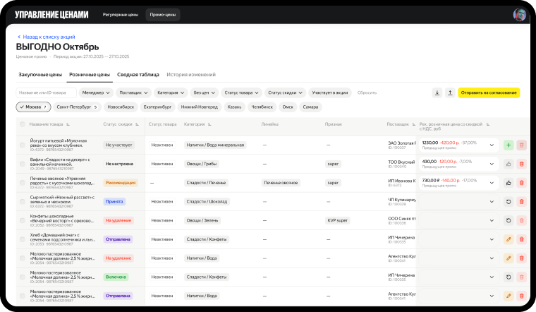
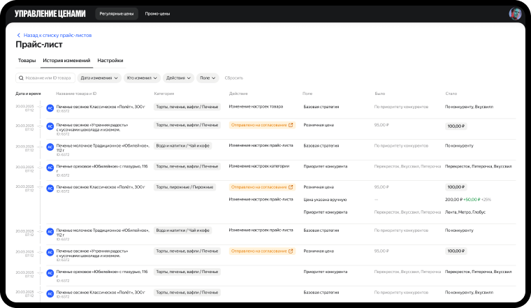
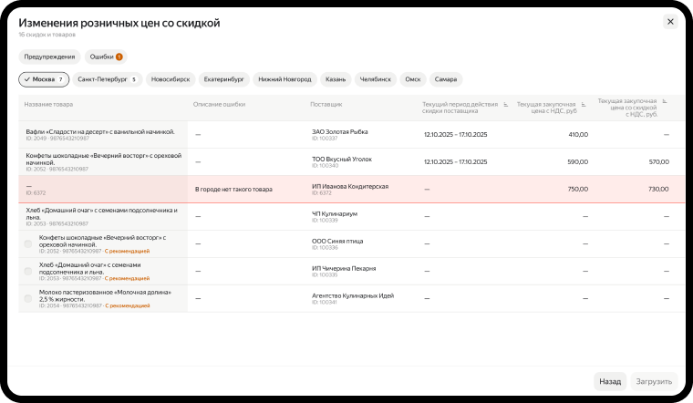
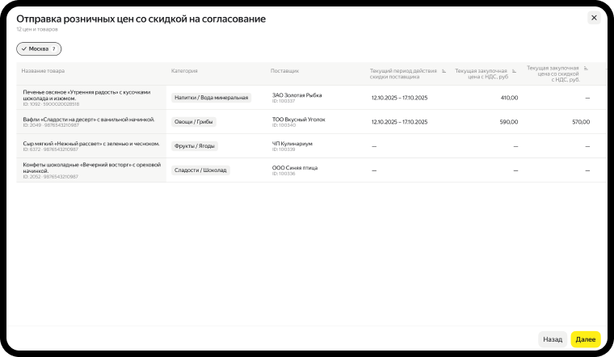

О проекте
Моя роль
Продуктовый дизайнер
Сроки
Октябрь — декабрь 2025
Задача и ограничения
Доработать существующие интерфейсы и спроектировать новые разделы. Работать с большим объёмом данных, сложными таблицами и существующими техническими ограничениями
Состав команды
Дизайн-лид
Продакт-менеджеры
Разработчики
Аналитики и тестировщики
Что я сделал
- Переработал интерфейс сопоставления товаров с аналогами конкурентов, добавил фильтрацию и возможность редактировать связи прямо в таблице
- Доработал систему управления ценами, включая историю изменений, а также сценарии работы с розничными ценами
- Улучшил интерфейсы управления ассортиментом и с нуля спроектировал раздел скидочных купонов
- Подготовил решения для разработки. Все четыре проекта дошли до продакшена

Что в итоге?
Три B2B-проекта, в которых удалось улучшить существующие интерфейсы и разработать новые сценарии работы с данными. Все решения были переданы в разработку и дошли до продакшена
Первый проект
Сравнение товаров
Переработал интерфейс управления аналогами товаров для категорийных менеджеров. Спроектировал таблицу для просмотра и массового редактирования связей с товарами конкурентов, добавил фильтрацию по категориям, типам товаров и городам, а также возможность переназначать аналоги прямо в таблице.
Второй проект
Управление ценами
Переработал страницу «История изменений» в системе управления ценами. Изменил структуру таблицы, разделил изменения по отдельным полям, добавил типы действий и фильтрацию, чтобы пользователи могли быстрее находить нужные записи и отслеживать изменения базовых и промоцен.





Третий проект
Ассортимент
Доработал раздел управления поставщиками в системе ассортимента. Спроектировал сценарий добавления поставщика для доставки товаров в дарксторы с учётом бизнес-ограничений: в пределах одного города поставщик не мог одновременно доставлять по разным условиям.


Финальная мысль
Работа над B2B-проектами в большой команде научила меня быстрее разбираться в сложных бизнес-процессах, находить решения в условиях существующей системы и внимательнее относиться к деталям